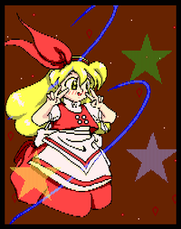
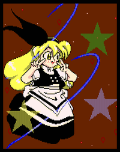

- Welcome to Touhou Wiki!
- Please register to edit. For assistance, check in with our Discord server or IRC channel.
Ellen
| エレン Ellen | |
|---|---|
|
Ellen in Phantasmagoria of Dim.Dream Hardworking Witch Who Dreams of LoveMore Character Titles | |
| Species |
Witch |
| Abilities |
Inability to grow old, magic |
| Age |
Unknown, but likely very old |
| Occupation |
Witch |
Music Themes | |
| |
Appearances | |
| Official Games | |
| |
Ellen (エレン Eren) is an eternally young witch who makes her appearance during Phantasmagoria of Dim.Dream. She lives longer than the average human (it's possible that she is immortal), but most memories of her life completely leave her mind in blocks at a time, making her as childish as she looks. It's assumed that she is not a human.
Character Basis[edit]
Ellen is not ZUN's original character but a parody of one of the heroines of Hatarakimono (はたらきもの, lit. "Hard Worker"), a manga by Izumi Takemoto, full name Ellen Fuwafuwaatama (fluffy-head) Aureus (エレン・ふわふわ頭・オーレウス). In her ending, when she wants her new store's name to be "Fuwafuwa Ellen's Magic Shop", in reference to this. Sokrates is also based on this manga (ZUN notes that Ellen's clothing style and the "age" where cats were pets don't really match up, so the cat should probably be named "Archimedes" instead).
Name[edit]
"Ellen" is a very common Western feminine first name. It is of Greek origin, and the meaning of it is "sun ray, shining light"[1]
Design[edit]
Ellen's design is a short character with long blond hair and a red-and-white dress. She wears a red bow in her hair and is always seen in the company of Sokrates, her pet cat. Her alternate outfit shows all red parts in black.
Relationships[edit]
- Sokrates
Sokrates is Ellens pet cat who can be seen on her shoulder almost the time.
Additional Information[edit]
- Ellen appears on the cover of Phantasmagoria of Dim.Dream along with all the other characters in that game.
- Ellen's outfit may have been the inspiration for Marisa's outfit later on in the Windows series. Her alternate outfit is even black.
- One of Marisa's palettes in Touhou Hisoutensoku resembles Ellen.
- Her first gauge attack may have been the predecessor of Sakuya Izayoi's Killing Doll.
Official Profiles[edit]
|  | ★ はたらきもので恋を夢見る魔女 ・・・ エレン
そんなわけで、いつまでたっても子供のままです。 （は○らき○の より っておぃ） そんなわけで、エレンはこれでも立派な魔女。それはもう、本当に長い間、生き続けています。
|
★ Hardworking witch who dreams of love ... Ellen
Because of that, she is always a child. (quoted from Ha**raki**no...what?) As such, while she may not look like one, she is a creditable witch. Truly, she has lived for a quite long time.
|
Official Sources[edit]
- 1997/12/29 Phantasmagoria of Dim.Dream - Official profile, dialogue, ending